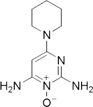

这需要数周才能看到治疗效果。我们可以认为脱发是当一个暂停，或拉扯头发丝后，最多两个毛留在手指之间。一个治疗停药后，脱发往往只是大约2个月后恢复，因为死毛需要几个星期下跌。这种治疗的效果可以给你信心，因为它往往会停止脱发，并保持它回来了。

米诺地尔是临床证明对遗传性脱发的预防行动的第一个治疗脱发。在显著的积极活动 产生的，米诺地尔溶液已在全球超过500万的成年人使用 。继7000用户的调查，其中80％的人说，它已刺激毛发的生长。
什么是米诺地尔的作用模式？
米诺地尔移动毛囊从静止相到增长阶段，恢复头发。
研究人员认为，米诺地尔的工作原理，通过增加循环，刺激血液流至头皮区域和喂养细胞所需头发生长所必需的营养物质。但它也可能有助于提高这些细胞的数量。研究仍在进行。
随着日常使用米诺地尔的男性，有研究显示，在4遗传性脱发出5名男子的改进-在短短四个月内！中到高的再生长为12个月的使用后记录在用户的50％。
如果你的头发变薄，遗传性脱发也被你的家庭成员经验丰富，不要让你的基因决定你的未来。 与家人突破传统，考虑使用米诺地尔。米诺地尔5％用于18和45岁之间的雄激素脱发 （引起激素），中度在人的治疗。
同时，米诺地尔2％的适应症为妇女在头顶头发稀疏。 临床证明有利于在谁与女性秃顶，米诺地尔对女性是最流行的非手 术治疗脱发，尤其在头皮地区遭受女性头发的生长。
警告:
此产品是仅在头部的冠变薄和脱发有效。
如果你的头皮上使用处方药的应用程序不使用米诺地尔5％， 如果你未满18岁，女性，如果你不知道什么是脱发的原因，或 米诺地尔2％，推荐为女性，除非医生另有指示。